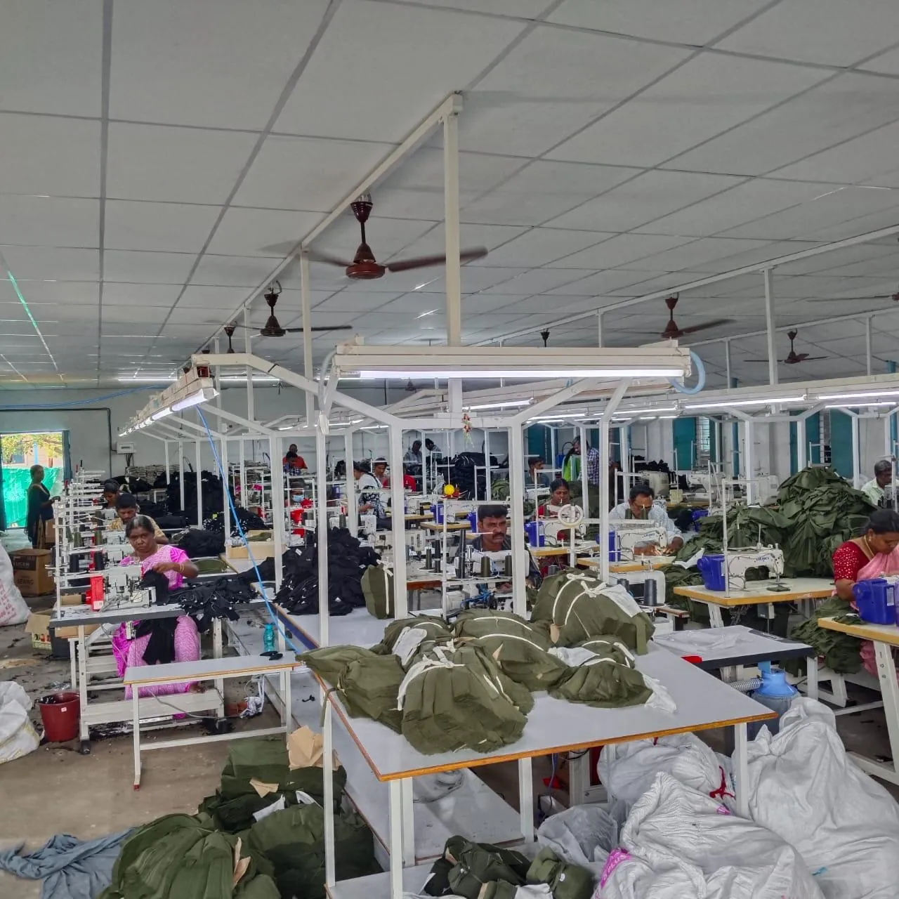
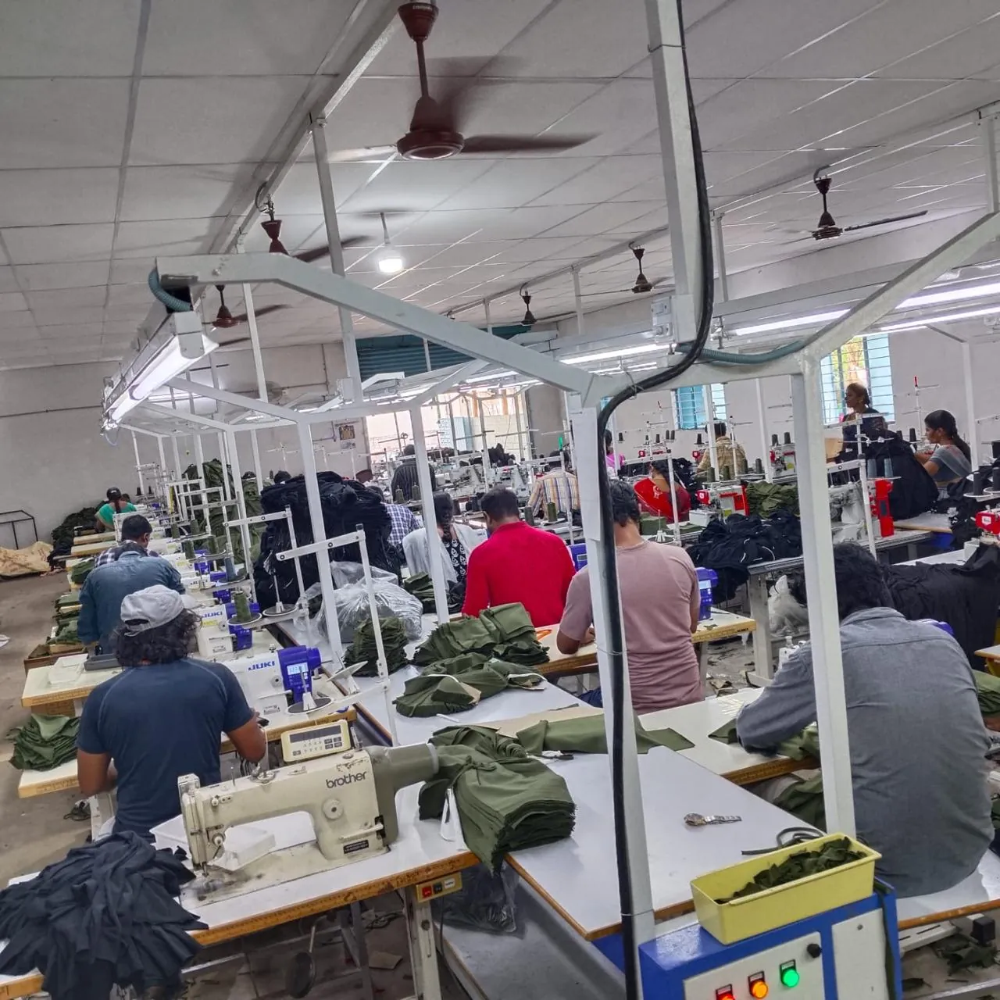

RIB Cotton Exports
A certified apparel manufacturing and export company based in Tirupur, South India.

Quality knitwear for global customers
We specialize in high-quality knitted garments for men, women, and children. Our product range includes T-shirts, polo shirts, sweatshirts, tank tops, hooded jackets, and leggings. We currently supply customers across Europe and Scandinavian countries.
Our production units are fully compliant and certified. We manufacture both organic and conventional garments using azo-free dyes, reflecting our commitment to quality, consistency, and environmental responsibility.
We offer competitive pricing, flexible MOQs, and strict quality control throughout the production process.
I would be happy to discuss your requirements and provide samples or quotations based on your needs.
Thank you for considering RIB Cotton Exports. I look forward to the opportunity to work together.
Quality, comfort and responsibility
It stretches and recovers
The ridges open as you move and close again afterwards, so cuffs, hems and necklines keep their shape.
It sits close and soft
A fine rib hugs the body without pinching, which is why it works so well for children and for lounge wear.
Organic options
Choose organic or conventional knitted garments, made using azo-free dyes.
